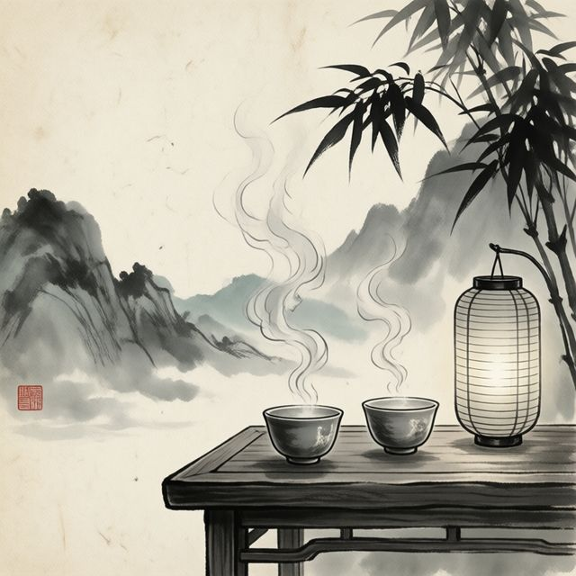
聊天、看圖、上網
讀頻道前面的訊息當上下文，圖片也看得懂（最近 4 則裡最多 4 張）。問天氣會去查，需要即時資訊時自己決定要不要搜尋、打開網頁。後面接什麼模型由你決定，本機的 Ollama，或 OpenAI、DeepSeek 這類線上服務都行。
一隻住在 Discord 裡的 AI 機器人。會聊天、上網查、放音樂、占卜、畫圖，也陪你下棋打麻將、抽水墨卡。
名字取得很老實，有時候真的很笨。
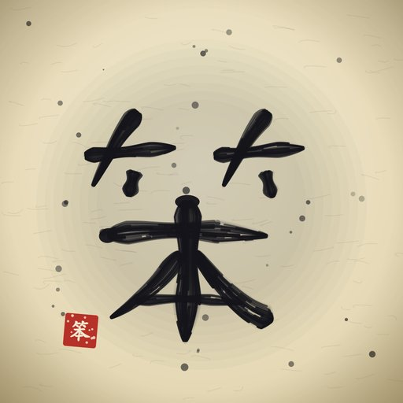
@大笨bot 台北明天會下雨嗎
🔎 搜尋：台北 明天 天氣
下午有雨，出門帶傘。
放周杰倫的晴天
🎶 排進佇列了：晴天。語音頻道狀態也幫你改成歌名。
幫我擲筊，問明天面試順不順
聖筊。擲筊是程式擲的，我只負責解讀，想作弊也沒辦法。
我想借一萬代幣，要去鍛劍
借你。利息一天五成，滾得很快，記得還。
你是不是很笨
名字都寫在上面了。
私訊它、在頻道 @它、回覆它的訊息，它就會回。其他機器人說的話一律不理，免得兩隻機器人吵個沒完。

讀頻道前面的訊息當上下文，圖片也看得懂（最近 4 則裡最多 4 張）。問天氣會去查，需要即時資訊時自己決定要不要搜尋、打開網頁。後面接什麼模型由你決定，本機的 Ollama，或 OpenAI、DeepSeek 這類線上服務都行。
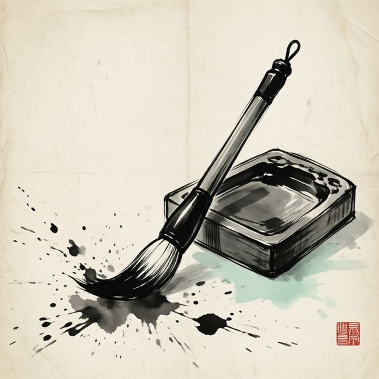
用 /畫圖 或直接說「畫一張…」，它會叫後面的繪圖模型來畫，也能改圖、做音效、做最長 6 秒的小動畫。活動選單裡的「圖創區」可以把畫好的圖分類收藏，還能跟大笨bot 討論要怎麼改。
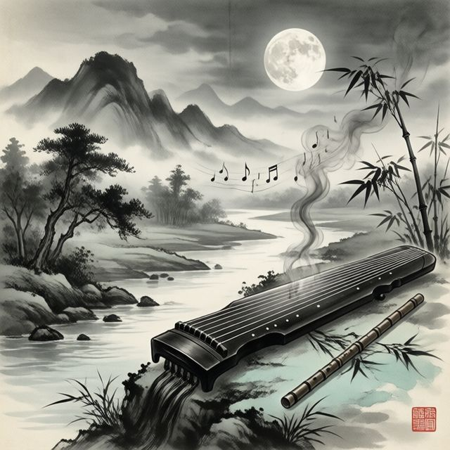
進語音頻道後說「放周杰倫的晴天」，或用指令貼網址、整個播放清單。有佇列、插播、播放面板和進度條，沒人聽了會自己離開。
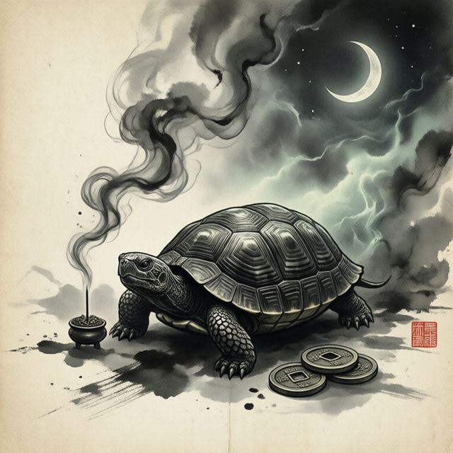
塔羅（78 張，正逆位）、擲筊、六十甲子籤、易經起卦，還能排八字命盤和星盤，並附上圖。牌、籤、卦都由程式用亂數決定，模型只負責解讀。
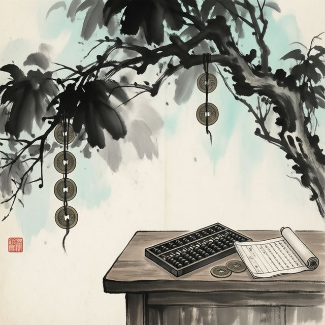
在頻道說話、掛語音就會慢慢賺代幣，只能拿來玩，不是現金。缺錢可以跟大笨bot 借，它很小氣，理由要講得動聽，而且利息每天五成。欠債不還，賺到的錢會先被扣一半、掛上「欠債人」身分組，每晚八點公告。
每筆轉帳和借還款，都能發到你指定的帳本頻道；沒設定就不發。一隻機器人待在好幾個伺服器也沒問題，各伺服器的帳各算各的。
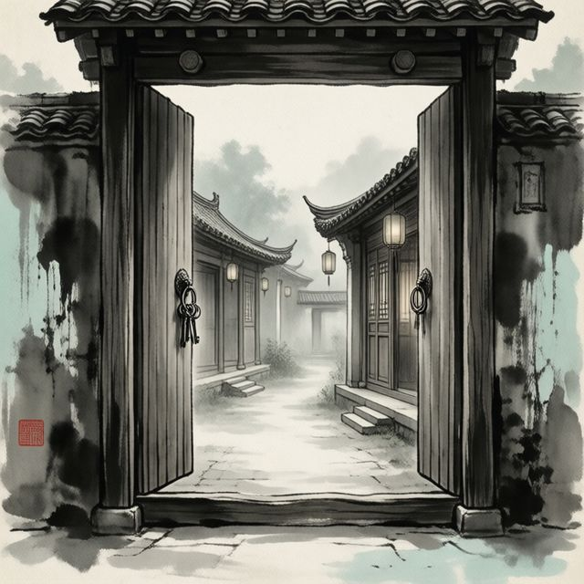
叫它開、改名、封存頻道，或建立「有人進去就自動開一間、走光就刪掉」的臨時語音房。叫它做事的人自己要有「管理頻道」權限，不然它不理你。
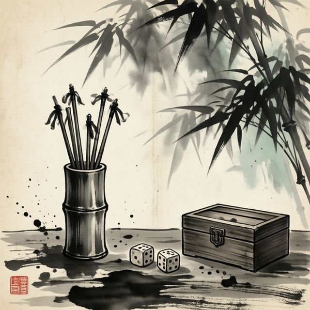
按鈕投票、從一串選項抽人、亂數、總結最近的對話。
每個中文指令都有英文別名（例如 /畫圖 也能打 /imagine），輸入 /help 看完整清單。
在語音頻道按下 Activity，就會開出一個即時同步的遊戲視窗。人不夠的位置可以補電腦，其他人先在旁邊看。
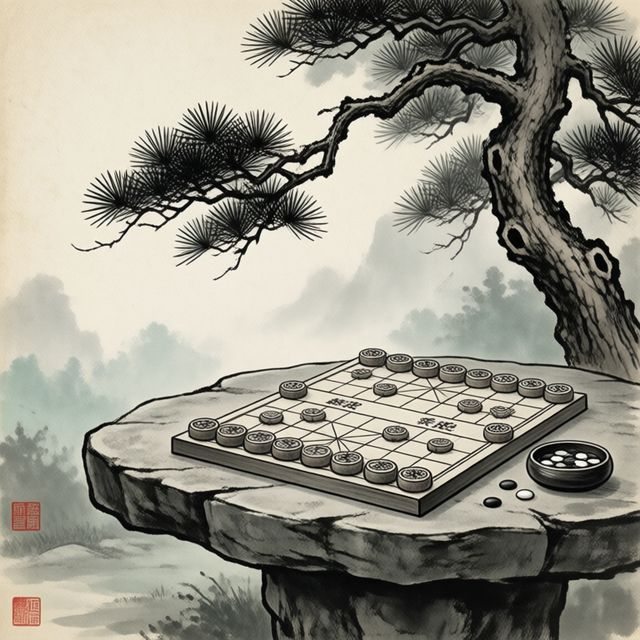
五子棋、四連棋、黑白棋、西洋棋、象棋。西洋棋和象棋可以加電腦對手，分新手、普通、高手、大師四級；電腦的棋是自己算的，不靠任何線上服務。
新手只看一步而且常亂走，大師每步想三秒，大約能看七到十步。
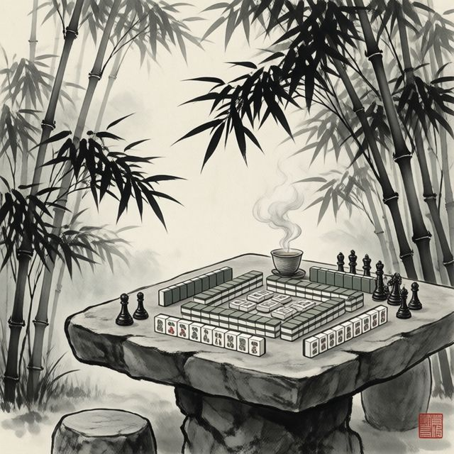
台灣麻將（16 張）和日本麻將（立直、寶牌、振聽）、台灣簡易橋牌、德州撲克，都能補電腦。電腦各有個性，有的愛衝，有的愛吃碰，也有真的會讀牌防守的。只用練習點數。
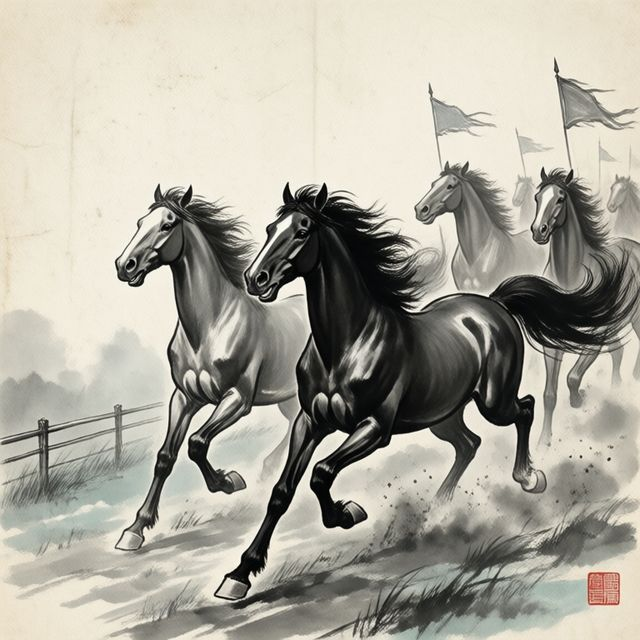
還有骰子和擲硬幣。可以選練習幣，或機器人的虛擬代幣。賽馬的 10 匹馬各有能力值和戰績，強馬賠得少，冷門賠得多。
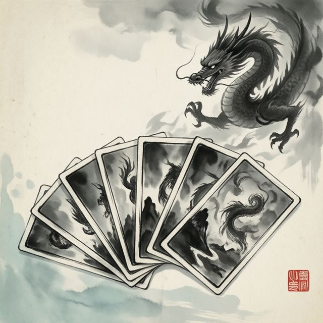
用代幣抽卡，收集三百張水墨畫的卡：神獸、人物、山水、器物各一批，從樸素的 N 一路到金光閃閃的 SSR。抽到的卡收進卡冊，還有名卡榜可以比誰收得多。
每一張都是 AI 用毛筆水墨的風格畫的。
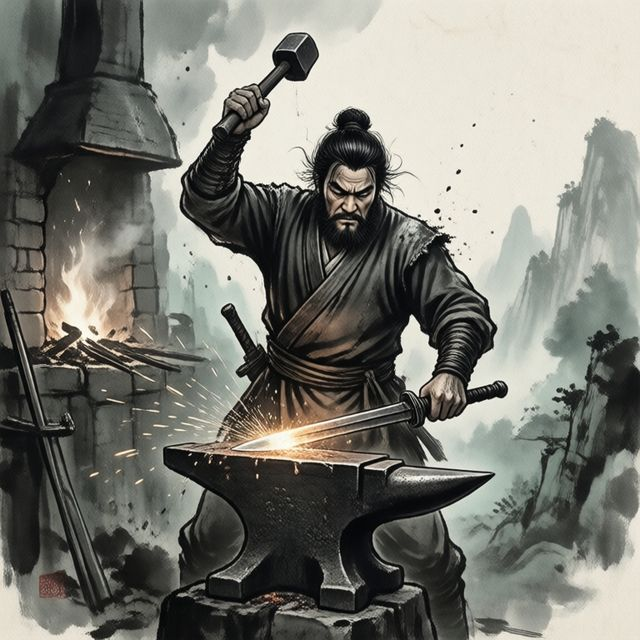
把一把劍鍛到一百階，每一階的外觀都不一樣。每次鍛造有機率成功，也有機率劍碎，整把歸零。賣不賣、要不要衝，自己決定。
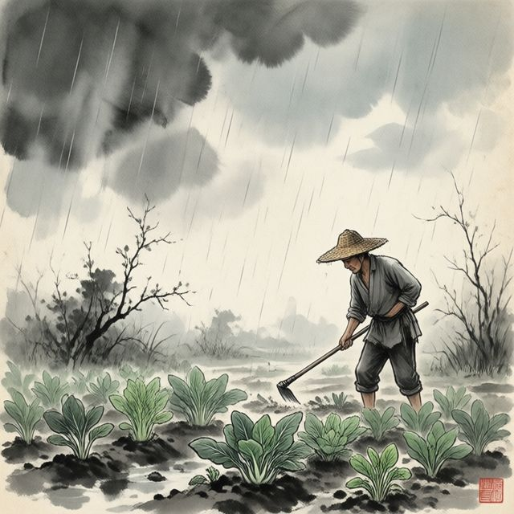
每個人一塊田，菜照真實時間慢慢長，關掉也不會停。收成能賣錢，運氣好還會長出大顆的和金色的。朋友的菜熟了，也可以溜去偷一個。
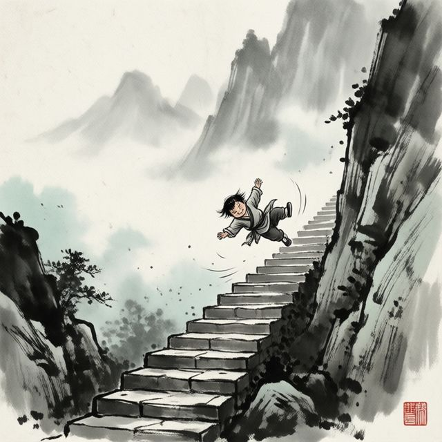
小朋友下樓梯最多 4 人一起玩，彈珠台一個人玩。
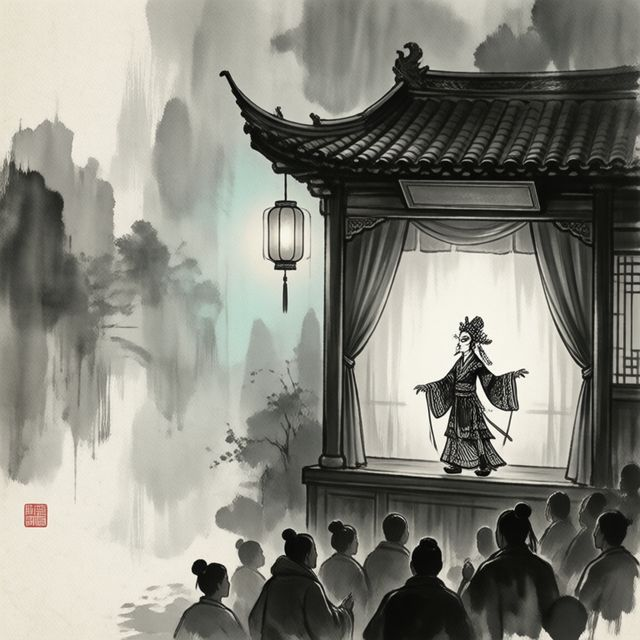
貼 YouTube 連結或打關鍵字排進清單，大家同步播放、暫停和拖進度。畫質、字幕各自選，字幕直接用影片原本的，不經過 AI 翻譯。
程式是開源的。這是個人專案，機器人跑在作者自己的伺服器上，想用就照下面的步驟自己架一隻。
ffmpeg 和 node，再找一個 OpenAI 相容的模型 API（本機 Ollama 就可以）。.env（所有設定都只在這一個檔，連機器人和遊戲後端之間的內部金鑰，第一次啟動也會自己產生寫進去）：
git clone https://github.com/ggh93234999/discord-ai-bot.git
cd discord-ai-bot
python3 -m venv .venv && source .venv/bin/activate
pip install -r requirements.txt
cp .env.example .envpython bot.py機器人只需要主動連出去，不用對外開任何連接埠。要玩 Activity 遊戲，還要另外架網頁和後端，並在 Developer Portal 設定網址，詳細步驟在 README 的「部署」。